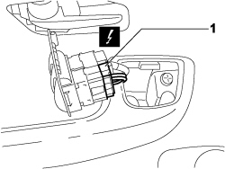
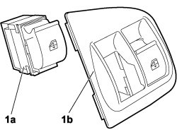

7005M10 ELECTRIC WINDOW CONTROL SWITCH (ONE) FOR ONE FRONT DOOR - R.R.
- Path
- Procedures > 70 FITTINGS > 7005 PASSENGER COMPARTMENT FRONT SIDE DOORS > 7005M front electric windows > 7005M10 ELECTRIC WINDOW CONTROL SWITCH (ONE) FOR ONE FRONT DOOR - R.R.
- Kind
- repair procedure (removal / refitting; the operation number is the code)
- Applies to
- engines: 1.4 8v, 1.6 16v, 1.3 JTD 16V, 1.9 JTD 8V; all production periods
- Interactive page
- https://sloeber94.github.io/elrnDB-fDbl/en/#/223000189
Applies to: engines: 1.4 8v, 1.6 16v, 1.3 JTD 16V, 1.9 JTD 8V; production: da 12/03; only with equipment: MY 2005
 Removing
Removing
 Refitting
Refitting- Turn the ignition key to the OFF position.
- Lift the bonnet
- Disconnect the negative battery terminal.
Description | Connector | |
|---|---|---|
BATTERY |
1. Prise up the switch panel/mount.

Applies to: engines: 1.4 8v, 1.6 16v, 1.3 JTD 16V, 1.9 JTD 8V; production: da 12/03; only with equipment: MY 2005
1. Disconnect the electrical connection from the relevant switch.
Description | Connector | |
|---|---|---|
1 | BATTERY ELECTRIC WINDOW CONTROLS ON DRIVER'S FRONT DOOR |

Applies to: engines: 1.4 8v, 1.6 16v, 1.3 JTD 16V, 1.9 JTD 8V; production: da 12/03; only with equipment: MY 2005
1. Remove the switch (1a) from panel/mount (1b).

Applies to: engines: 1.4 8v, 1.6 16v, 1.3 JTD 16V, 1.9 JTD 8V; production: da 12/03; only with equipment: MY 2005
Refitting
Removing- Check the condition of the switch.
- Couple the switch to the panel/mount.
- Connect the electrical connection to the relevant switch.
Description | Connector | |
|---|---|---|
BATTERY ELECTRIC WINDOW CONTROLS ON DRIVER'S FRONT DOOR |
- Fit the panel/mount in its housing.
- Connect the negative battery terminal.
Description | Connector | |
|---|---|---|
BATTERY |
- Check the operation of the switch.